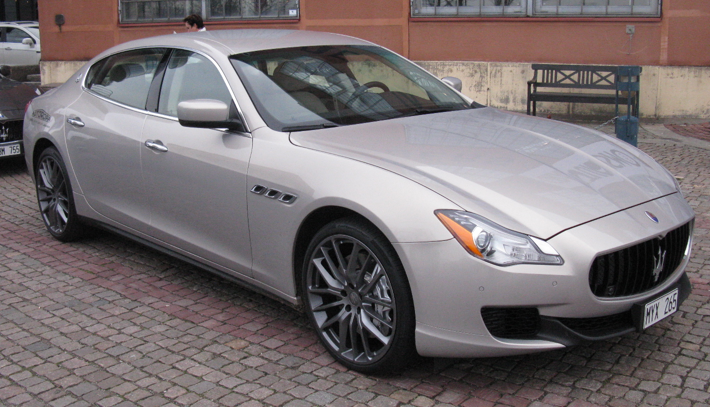

The company was founded by the five Maserati brothers; Alfieri, Bindo, Carlo, Ettore and Ernesto. the Trident logo on the Maserati cars is based on the Fountain of Neptune Statue in Bologna's Piazza Maggiore.
The Company has bounced around owners since its creation, In 1937 after Alfieri died the company was sold to Adolfo Orsi who in 1940 moved the company to its current home in Modena whilst the remaining brothers contiued engineering roles at the company and in 1957 they stopped racing to concentrate on making road cars.
In 1968 the company was bought by Citoren however due to the recession in the early 70's citoren went bankrupt and Maserati was put in liquidation and after many meetings it was bought before it could be liquiadted by Italian state owned company GEPI in 1975
In 1993 Fiat bought the company however sold their stake in the company not to long after buying it, 4 years later they sold their stake in Maserati to Ferrari
In 2005 Maserati Broke off from Ferrari and joined Alfa Romeo under the Fiat Group